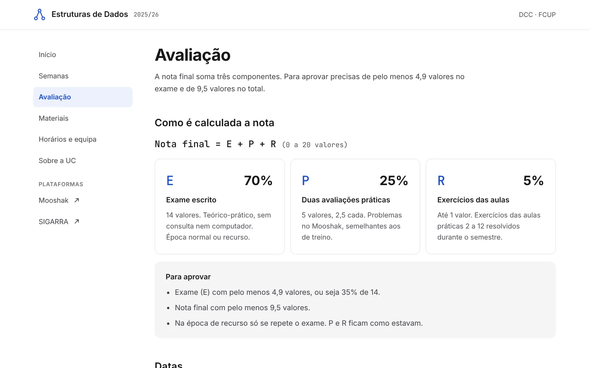
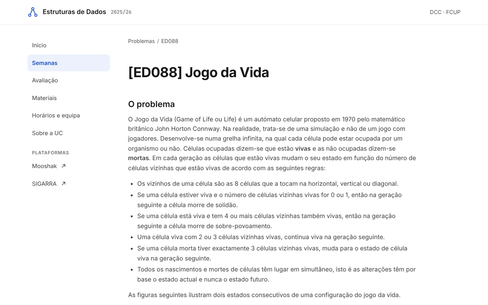

Exemplos
Estruturas de Dados 2025/26
O site completo de Estruturas de Dados (CC1007, DCC/FCUP), refeito com o kit a partir do site original: seis páginas principais, catorze guiões, 65 enunciados de problemas e o código das aulas. É o caso real que serviu para desenhar o kit e que o testa a cada alteração.
O conteúdo deste exemplo (textos, guiões, enunciados, slides e código das aulas) é do Prof. Fernando Silva e foi copiado do site original só para demonstrar o kit. Não está abrangido pela licença MIT: ver o NOTICE.md. Use-o como referência de estrutura, não como conteúdo a copiar.
O site

<uc-hero>, <uc-this-week>, <uc-notices> e <uc-deadlines>.
course.js.

uc-content.Páginas e o que usam
| Página | Componentes | Blocos e notas |
|---|---|---|
index.html | <uc-hero>, <uc-this-week>, <uc-notices>, <uc-deadlines>, <uc-team> | uc-split para as duas colunas, uc-shortcuts para os atalhos. |
semanas.html | <uc-weeks>, <uc-week> | Um <uc-week> por semana com links para os sumários, guiões e slides; quizzes, entregas e avaliações vêm de deadlines. |
avaliacao.html | <uc-grading calculator>, <uc-deadlines view="table"> | Datas das provas e calendário dos quizzes vindos de deadlines; uc-callout, uc-checklist, uc-links com a[data-auth]. |
materiais.html | <uc-materials> | Slides com botões PT/EN, uc-links, bibliografia em uc-card com uc-eyebrow. |
horarios.html | <uc-team view="table"> | Cartões das turmas, uc-tag, uc-table. |
sobre.html | — | uc-page-header com uc-eyebrow, programa em uc-steps, cursos em uc-tags. |
guioes/aula01–12.html | <uc-guide week-label prev next>, <uc-exercise>, <uc-code>, <uc-problems>, <uc-question>, widgets | Dicas e soluções (uc-hint, uc-solution), código que corre na página com testes; os guiões usam widgets: listas (aula 6), pilhas e filas (7), crescimento das funções (8), subconjuntos e permutações (9), percursos (10) e inserções e remoções (11) em árvores binárias de pesquisa, min-heap (12). Ver Catálogo. |
guioes/teste-pratico-*.html | <uc-guide parent="assessment">, <uc-assessment-info>, <uc-exercise>, <uc-problems> | Informações dos testes práticos, com os problemas de treino. |
problemas/ | <uc-problems filters track>, <uc-problem> | 65 enunciados migrados dentro de uc-content, com o cabeçalho <uc-problem> (Submeter, prazo, Resolvido) e os exemplos em uc-samples. |
codigo/ | <uc-materials>, <uc-code collapsible> | Uma página por tema com o código das teóricas; os programas mais simples têm o botão Executar (run com um Main escondido). |
Todas as páginas usam <uc-page>. As que não estão na navegação (guiões, problemas, código) dizem qual é o item ativo com current: ver páginas em subpastas.
O course.js
Num único ficheiro, course.js, estão o que muda todos os anos e o que aparece em várias páginas:
- Identificação:
code,title,tagline,edition,institutioneaccentColor: "#1D4ED8". - O semestre (início, 12 semanas, a semana de estudo de 27 a 31 de outubro), de onde saem as datas de todas as semanas.
- Seis páginas na navegação e duas plataformas (Mooshak e SIGARRA).
- A equipa (cinco pessoas, com turmas e gabinete), mostrada no início e nos horários.
- Os prazos (testes, entregas, exame) e os avisos, que aparecem no início, na avaliação e dentro das semanas certas.
search: true: o botão «Pesquisar» do cabeçalho (Ctrl K) procura em todas as páginas, guiões incluídos. O índice é gerado pelouc-site.py.
Para o ano seguinte, copia-se a pasta e muda-se sobretudo este ficheiro: ver Novo ano letivo.
Personalização
O exemplo usa quatro dos cinco níveis de personalização:
| Nível | No exemplo |
|---|---|
0: course.js | A cor de destaque, as páginas e as plataformas. |
| 2: CSS livre | Nenhum: o theme.css está vazio. O programa numerado, a bibliografia, os caminhos de navegação e os exemplos de input e output usam blocos do kit (uc-steps, uc-eyebrow, uc-crumbs, uc-samples). |
| 3: componentes próprios | Nenhum. O antigo <uc-bst-traversal> passou para as demonstrações (a aula 10 usa o widget <uc-widget-bst>). Ver o caso real do nível 3. |
| 4: HTML livre | Os enunciados, as páginas de ajuda e o código das aulas: HTML do site antigo dentro de <uc-page> (ver abaixo). |
Há mais sobre estas escolhas em Personalizar: o caso real.
Migrar um site antigo
O site original tinha dezenas de páginas em HTML simples. Em vez de as reescrever, os enunciados, as páginas de ajuda e o código das aulas foram copiados quase como estavam para dentro de <uc-page> e de um <div class="uc-content">, que dá espaçamento e tipografia a HTML sem classes. Só as páginas que os estudantes usam todas as semanas (início, semanas, guiões) foram reescritas com componentes. Ver Nível 4: HTML livre.
Os resultados, presenças e turnos da avaliação, com dados de alunos, não foram copiados: as páginas ligam ao site original.
Para fazer o mesmo com um assistente de programação, ver Migrar um site existente.
Ver também
- Todos os exemplos, incluindo Competitive Programming e Introduction to Programming.
- Padrões de página: as mesmas estruturas, com o curso fictício, prontas a copiar.
- Criar o meu site a partir do modelo.